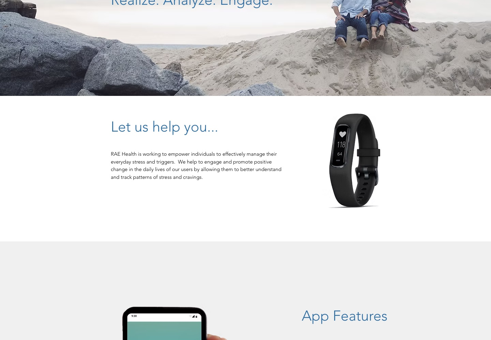
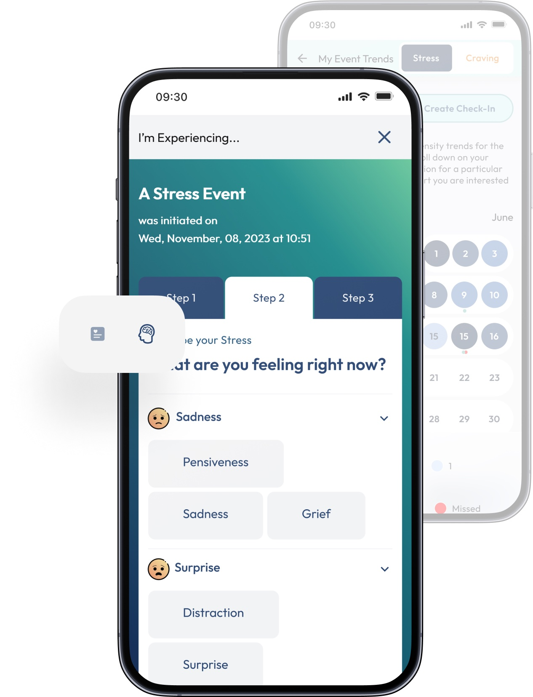
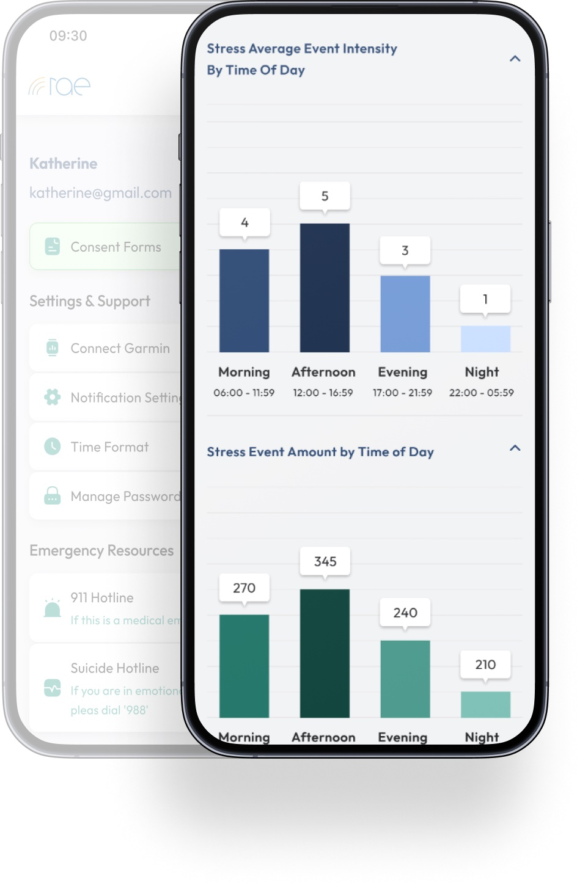

Rae Health
Giving a clinical wearable platform its first real baseline

Overview
Worked on a live clinical wearable platform, defining foundational product metrics and validating growth strategy through data analysis and customer research.
What RAE is
RAE stands for Realize, Analyze, Engage. It is a wearable and an app for people in recovery from substance use disorder: the band reads physiology continuously, models pick out the signature of stress or a craving, and the app offers a way to de-escalate at the moment it happens rather than at the next appointment.
The product is built for three audiences at once — people in recovery, the treatment providers and care teams supporting them, and employers running wellness programmes. The company is supported by the National Institutes of Health and UT Tyler, runs a study with UMass Medical School and Garmin, and holds two US patents.

How the detection works
The wearable measures accelerometry, skin conductance, skin temperature and heart rate. Machine learning over those signals identifies biomarkers of stress and craving. When one fires, the device vibrates and the app opens de-escalation tools — breathing exercises among them — so the response lands while the state is still happening.
Nothing is left to the sensor alone: a patient can log an event by hand, which both fills the gaps and gives the models something to be checked against.

What the published research says
The detection has been evaluated in peer-reviewed work: the model identified stress correctly 76% of the time and craving 69%, with false positive rates of 33% and 28%. Clients reported heightened awareness of their own patterns; providers saw an opening for more personalised care.
That is the context the metrics work sat in. A product whose value rests on detection being trustworthy enough to act on needs to know how many patients are actually active, how dense the monitoring really is, and how often anyone responds — which is what the baseline below set out to establish.
What I did
- Defined the company's first North Star metric and supporting metric tree (Reach → Activation → Retention → Clinical Engagement)
- Analyzed event-level data (85 patients, ~91,000 detection events, 6 months) to compute the product's first measured baseline
- Stress-tested the ROI model behind the company's growth strategy: traced each figure to source, formula, or "unverifiable", then recomputed break-even and reframed the claim before it reached prospects
- Ran 6 customer interviews alongside usability studies to validate hypotheses before committing engineering capacity, and turned a gap in the acquisition funnel into a scoped backlog item
